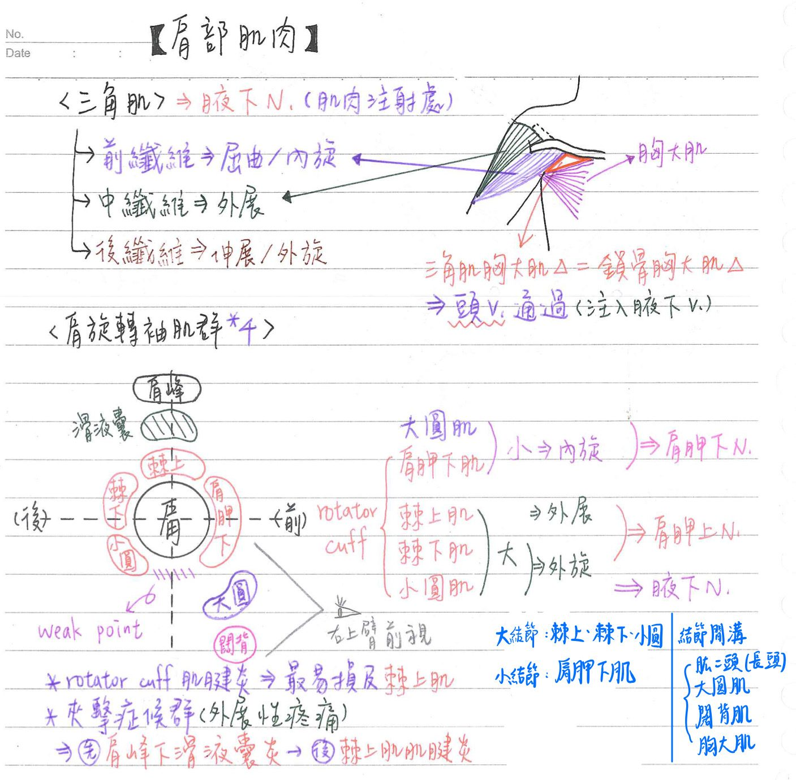
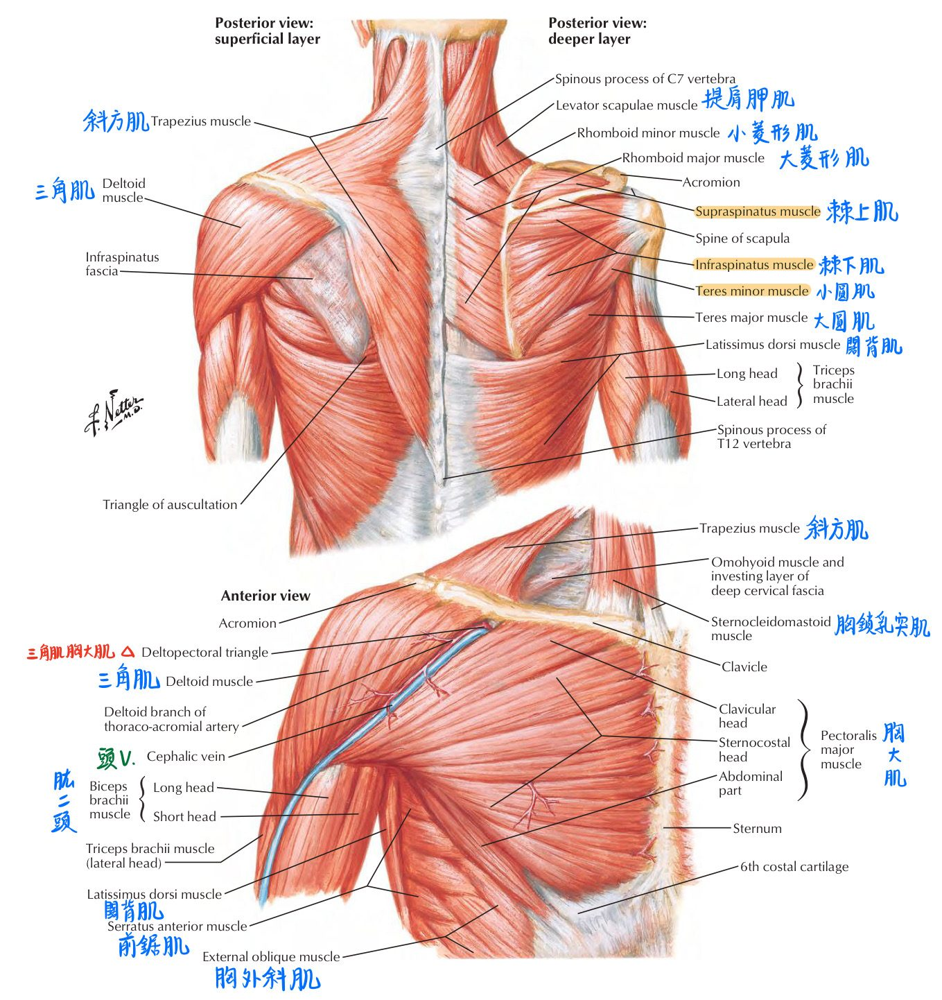
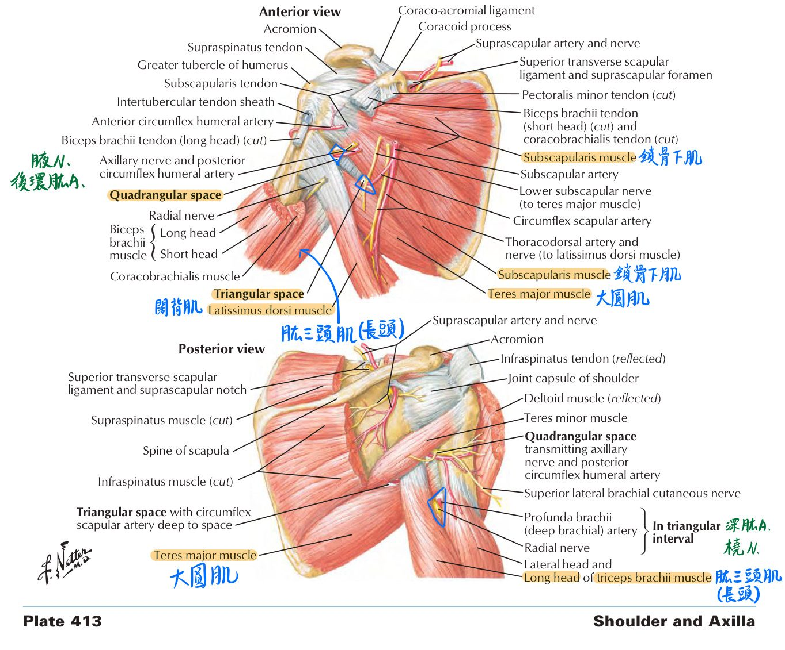
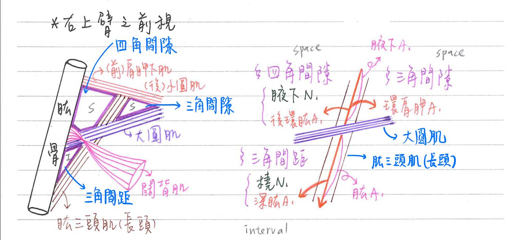
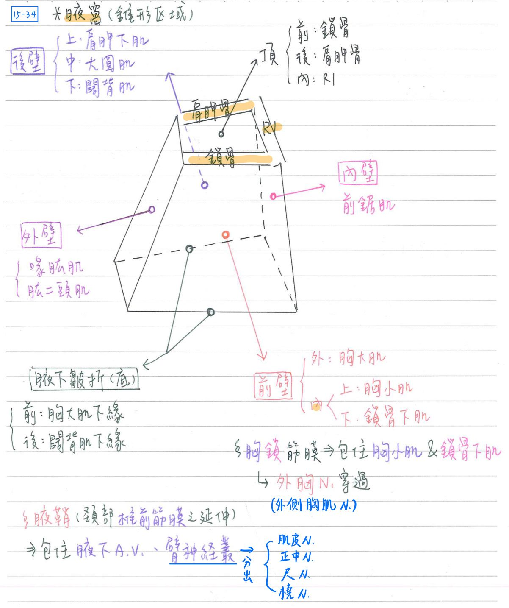

💪🏼 肌肉系統：肩部肌肉
移動肩部(肩胛骨)之肌肉
| 屈曲(flexion) | 伸展(extension) | 外展(abduction) | 內收(adduction) | ||||
|---|---|---|---|---|---|---|---|
| 三角肌(前纖維) | 腋下N. | 三角肌(後纖維) | 腋下N. | 三角肌(中間纖維) | 腋下N. | 胸大肌(胸骨部) | 內胸N 外胸N |
| 胸大肌(鎖骨部) | 內胸N 外胸N | 闊背肌 | 胸背N | 棘上肌 | 肩胛上N | 闊背肌 | 胸背N |
| 肱二頭肌 | 肌皮N | 大圓肌 | 肩胛下N | 大圓肌 | 肩胛下N | ||
| 喙肱肌 | 肌皮N | 小圓肌 | 腋下N. |
| 內旋(medial rotation) | 外旋(lateral rotation) | ||
|---|---|---|---|
| 肩胛下肌 | 肩胛下N | 棘下肌 | 肩胛上N |
| 闊背肌 | 胸背N | 小圓肌 | 腋下N. |
| 大圓肌 | 肩胛下N | 三角肌(後纖維) | 腋下N. |
| 三角肌(前纖維) | 腋下N. |
- 伸展：使身體2部分的角度增加。 EX：手往後甩的動作
- 三角肌(中間纖維)：三角肌的3個fiber中體積最大
肩部肌肉 [hint：腋下三小，肩胛下大，棘肩胛上]；★皆不附著於中軸骨上
| 肌肉名 | 起-止 | 神經支配 | 動作 |
|---|---|---|---|
| 三角肌 (deltoid) | 前纖維：鎖骨外 1/3-肱骨三角肌粗隆 中間纖維：肩峰外緣-肱骨三角肌粗隆 後纖維：肩胛棘下緣-肱骨三角肌粗隆 | ★[108-1]★[108-2]腋下N | 前纖維：屈曲/內旋 中間纖維：外展上臂 後纖維：伸展/外旋 |
| 大圓肌 (teres major) | 肩胛骨-肱骨結節間溝 ★(不附著於中軸骨上) | 肩胛下N | ★內旋/伸展上臂 |
| 肩胛下肌 (subscapularis) | 肩胛骨-肱骨小結節 | ★肩胛下N | ★內旋上臂 |
| 棘上肌 (supraspinalis) | 肩胛骨-肱骨大結節 | ★肩胛上N | ★外展上臂 |
| 棘下肌 (infraspinalis) | 肩胛骨-肱骨大結節 | ★★肩胛上N | 外旋上臂 |
| 小圓肌 (teres minor) | 肩胛骨-肱骨大結節 | ★★★腋下N | 外旋上臂 |
- 三角肌胸大肌△(deltopectoral △)=鎖骨胸大肌△(clavipectoral A)：
- 邊界：鎖骨、胸大肌、三角肌所圍成之△
- 具★頭靜脈(cephalic v.)通過→注入腋下V
[重點]肩旋轉袖口肌群(rotator cuff)
- ★包括：肩胛下肌、棘上肌、棘下肌、小圓肌共4塊。
- 均起自肩胛骨，肩胛下肌終止於肱骨小結節，其餘3塊終止於肱骨大結節
- 功能：固定肩關節的主力及幫助肩關節的運動
- 肩旋轉袖口肌群肌腱炎(rotator cuff tendinitis)
- [重點]★尤易損及棘上肌
- 好犯於棒球投手、游泳選手、網球選手
- 夾擊症候群(impingement syndrome)
- 肩峰下滑液囊炎(subacromial bursitis) —>棘上肌肌腱炎(tendinitis)
- 外展性疼痛(abduction pain, 尤其外展 50~130 度)


[重點] 上臂的三個解剖空間 (記圖)
上臂之四角間隙(quadrangular space)
- ★邊界：
- 上界：小圓肌(後)&肩胛下肌(前)
- 下界：大圓肌(後)&闊背肌(前)
- 內界：肱三頭肌(長頭)
- 外界：肱骨
- 通過：
- ★腋下N
- ★後環肱A
上臂之三角間距(triangular interval)
- 邊界：
- 上界：大圓肌
- 內界：肱三頭肌(長頭)
- 外界：肱骨
- 通過：橈N、深肱A(profunda brachil a，肱A之分枝)
上臂之三角間隙(triangular space)
- 邊界：
- 上界：小圓肌(後方)&肩胛下肌(前方)
- 下界：大圓肌
- 外界：肱三頭肌(長頭)
- 通過：環/旋肩胛A(circumflex scapular a.)
※腋下A→肩胛下A→旋肩胛A


[常考]★★腋窩(axilla)一錐形區域
- 前壁：胸大肌、胸小肌、鎖骨下肌
- 胸鎖筋膜(clavipectoral fascia)：外側胸肌N(外胸N)穿過
- 包住鎖骨下肌(subclavius)及胸小肌(pectorolis minor；@胸大肌後方；★由內胸N支配)
- 胸鎖筋膜(clavipectoral fascia)：外側胸肌N(外胸N)穿過
- 後壁：肩胛下肌、大圓肌、闊背肌
- 內壁：前鋸肌
- 外壁：喙肱肌、肱二頭肌
- 頂(apex)：鎖骨(前)、肩胛骨(後)、第一肋骨(內)
- 底：
- 前腋下皺褶(胸大肌下緣)
- 後腋下皺褶(闊背肌下緣)
- 腋鞘(axillary sheath)
- 頸部椎前筋膜(prevertebral fascia)之延伸
- 包住腋A、腋V、★臂神經叢等(沒有包住腋N！)
- 註：臂神經叢分出肌皮N、正中N、尺N、橈N

📖 書本補充：與筆記不同或筆記沒寫到的地方
⚠️
以下為對照書本後整理，筆記原文未更動。標「筆記 vs 書」的是兩邊寫法不同、建議回頭確認的地方。
胸部區的肌肉（p.147–148）
- 胸大肌：起自鎖骨、胸骨前表面、肋軟骨及腹外斜肌的腱膜；止於肱骨結節間溝之外側唇；胸內側和外側神經；作用＝內收、屈曲及內旋上臂。
- 胸小肌：起自肋骨前表面及其它位置；止於肩胛骨的喙突；胸內側神經；作用＝穩定肩胛骨。
- 前鋸肌：起自胸壁外側；止於肩胛骨的內側緣；胸長神經（long thoracic）；作用＝把肩胛骨往前（前移，protract）貼到後胸壁。
- 書的提示：前鋸肌無法把肩胛骨往前貼住胸壁 → 翼狀肩胛（winged scapula），最常見原因是胸長N受損。
- 胸小肌、鎖骨下肌、前鋸肌都沒有附著到肱骨，所以不能內收／內旋／屈曲肱骨（102-2-15 解析）。
- 「起點、終點都在中軸骨上」的是後鋸肌（椎骨→肋骨）；胸大肌（肱骨）、胸小肌（喙突）、前鋸肌（肩胛骨內側緣）都止於附肢骨——肩胛骨屬於肩帶，仍算附肢骨。
旋轉肌套（p.335–336）
- 近端附著：棘上肌＝棘上窩；棘下肌＝棘下窩；小圓肌＝肩胛骨外側緣；肩胛下肌＝肩胛下窩（筆記只寫「肩胛骨」）。
- 棘上肌的作用，書寫的是起始（initiate）上臂的外展；棘上肌啟動外展後，三角肌才能把上臂外展到水平（111-1-27 解析）。
- 肩胛下肌：神經寫上和下肩胛下神經（筆記寫「肩胛下N」）；作用除了內旋，書也列內收上臂。
- 記憶法：
- SITS＝Supraspinatus、Infraspinatus、Teres minor、Subscapularis。
- 把肱骨頭當成棒球握住：大拇指＝肩胛下肌，食指、中指、無名指＝棘上、棘下、小圓肌。
- 內旋／外旋＝骨頭前面轉向／離開中線（右肱骨看起來分別是逆時鐘、順時鐘轉）；書寫「附著在大結節前面及後面的肌肉分別將其內旋和外旋」。Claude 註：前方的內旋肌（肩胛下肌）實際上附著在小結節，見書上同頁表格。
後肩胛區的空間（p.362–363）
- 書的三個空間邊界與筆記一致：方形空間（腋N、旋肱後A）、三角空間（旋肩胛A）、三角間隙（橈N、肱深A）。
- 圖中可見肩胛上N與肩胛上A經上橫肩胛韌帶附近進入棘上窩（書的圖 88）。
- 臨床：三角肌粗隆位於肱骨幹外側，附近有橈N和肱深A走在橈神經溝 → 此處骨折最容易傷到這兩者；橈N 在大圓肌下方也與肱深A伴行。
📝 書中歷屆考題（點選答案作答）
101-2-23p.147
肩胛骨內緣背翻，無法貼近胸壁，此現象最可能肇因於下列何者之損傷？
105-2-12p.147
下列何者受損時，會影響前移 (protract) 肩胛骨 (scapula) 的功能？
💡 前鋸肌受傷時，無法將肩胛骨往前貼到後胸壁上。
107-2-30p.148
當患者出現翼狀肩胛骨 (winging of the scapula) 的症狀時，最常見的原因是由於那一條神經與其支配的肌肉受損所引發？
102-2-15p.148
下列何者受損會影響肱骨 (humerus) 的內收 (adduct)、內旋 (medially rotate) 及屈曲 (flex) 的功能？
💡 B、C、D 都沒有附著到肱骨。
105-2-11p.148
下列何者的起點及終點，都在中軸骨骼上？
💡 胸大肌、胸小肌、前鋸肌分別止於肱骨、喙突、肩胛骨內側緣（肩胛骨屬附肢骨）；後鋸肌由椎骨到肋骨。
101-1-11p.336
下列何者屬於肩旋轉肌群？
105-1-27p.336
腋神經 (axillary nerve) 受損時，會造成下列那一塊旋轉套 (rotator cuff) 肌肉無力？
111-1-27p.336
下列那一條肌肉協助三角肌 (deltoid muscle) 外展 (abduct) 上臂？
💡 棘上肌起始上臂外展，之後三角肌才能外展到水平。
104-2-26p.363
肱骨在三角肌粗隆 (deltoid tuberosity of humerus) 位置的骨折，最可能直接傷及那一條神經？
💡 三角肌粗隆在肱骨幹外側，附近有橈N和肱深A走在橈神經溝。
102-1-26p.363
肱骨在三角肌粗隆 (deltoid tuberosity of humerus) 位置的骨折，最可能直接傷及那一條血管？
107-1-30p.363
橈神經 (radial nerve) 在大圓肌 (teres major) 下方處受到傷害，通常也會傷及與其伴行的那一條血管？
💡 大圓肌下方的橈N與深肱動脈一起走在橈神經溝。